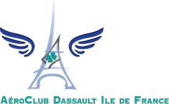
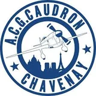
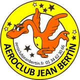
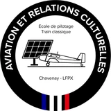
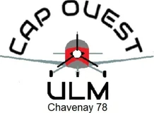
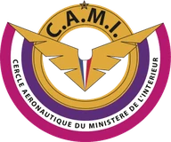
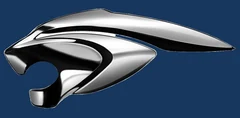

Aérodrome de Chavenay-Villepreux, LFPX, Yvelines
Un aérodrome ouvert sur son environnement
L’AUDACE rassemble les usagers de l’aérodrome de Chavenay. Avec les riverains, les communes et les autorités de l’aviation civile, elle fait vivre depuis 1996 un cadre de dialogue et de respect mutuel : la Charte de Chavenay.
Représenter les usagers, faire vivre le dialogue
Les aéroclubs de Chavenay sont des associations ouvertes à tous. L’AUDACE porte leur voix et veille, avec eux, au respect des engagements pris envers les riverains.
Représenter
L’AUDACE représente les aéroclubs et les pilotes auprès des communes, du Groupe ADP, de la DSAC-Nord et de la Commission consultative de l’environnement de l’aérodrome.
S’engager
Signataire du protocole de 1996 puis de la Charte de Chavenay avec l’ADNAC, elle siège au Comité de suivi de la Charte et en rend compte chaque année.
Former
Les aéroclubs sont des organismes de formation agréés ou déclarés auprès de la DSAC, contrôlés par la DGAC, et préparent au Brevet d’initiation aéronautique.
Ouvrir
Journées européennes du patrimoine, Journée des artistes, Journées des métiers de l’aéronautique, Téléthon : l’aérodrome accueille le public tout au long de l’année.
Chavenay vu de l’intérieur
Un film tourné sur l’aérodrome il y a quelques années, pour découvrir la vie de la plateforme et de ses aéroclubs.
La vidéo est hébergée par YouTube et ne se charge qu’au clic, en mode sans cookie publicitaire. Voir sur YouTube
La Charte de Chavenay
Charte des relations et de respect mutuel entre les usagers et les riverains de l’aérodrome de Chavenay-Villepreux, établie entre l’AUDACE et l’ADNAC, avec le concours de la municipalité de Chavenay, de la Commission consultative de l’environnement, du Groupe ADP et des services de la DGAC. Elle remplace le protocole de 1996, son avenant de 1999 et le texte de février 2011.
Télécharger la Charte signée (PDF, 3 Mo)Ont approuvé la version révisée
- Article 1
Un dialogue permanent
Usagers et riverains adoptent une charte de respect mutuel et maintiennent entre eux un dialogue permanent et constructif.
- Article 3
Concilier les intérêts
Rechercher les aménagements qui répondent au droit au calme des riverains tout en respectant le droit des membres des associations aéronautiques de pratiquer leur activité.
- Article 5
Réduire le bruit à la source
Favoriser les dispositifs homologués sur les aéronefs à activité répétitive et rechercher des aides à l’équipement. Chavenay peut jouer un rôle pilote de veille et d’innovation.
- Annexe, art. 4
Plage de silence en tour de piste
Du 1er avril au 30 septembre, les week-ends et jours fériés, des créneaux de tranquillité pour les riverains (détail ci-dessous).
- Annexe, art. 6
Piste 10/28
Dès qu’elle sera utilisable sur toute sa longueur après son aménagement par le Groupe ADP, la piste 10/28 deviendra la piste préférentielle.
- Annexe, art. 8
Comité de suivi
Les présidents de l’AUDACE et de l’ADNAC, chacun assisté d’un membre de son association, se réunissent en présence de l’animateur du suivi de la Charte, fonction confiée au maire de Chavenay.
Extraits résumés. Seul le texte signé fait foi.
Plage de confort dite plage de silence en tour de piste
Du 1er avril au 30 septembre de chaque année, pour les aéronefs à moteur thermique ou à turbine :
Le samedi
- avant 9 h
- de 12 h 30 à 14 h
- après 19 h
Le dimanche et les jours fériés
- avant 9 h
- de 12 h 30 à 15 h
- après 19 h
Ce qui reste possible. Pendant ces créneaux, seuls sont autorisés les départs en voyage ou en vol local de plus de 30 minutes.
Navigation. Un avion qui part en navigation, ou qui en revient et s’intègre dans le circuit pour atterrir, n’effectue pas un entraînement en tour de piste.
Avion électrique. La règle vise les moteurs thermiques et à turbine : l’avion électrique utilisé en formation n’est pas concerné.
Vos questions, nos réponses
Les questions qui reviennent le plus souvent sur la vie de l’aérodrome, avec les textes et les autorités qui y répondent.
Qu’est-ce que la Charte de Chavenay ?
C’est un engagement volontaire conclu entre l’AUDACE, qui représente les usagers, et l’ADNAC, qui représente les riverains. Elle fixe des bonnes pratiques destinées à limiter la gêne sonore autour de l’aérodrome : plages de silence, piste préférentielle, réduction du bruit à la source et dispositif de suivi partagé.
L’édition 2022 actualise et améliore les textes précédents, dont le premier protocole remonte à 1996. Elle a été approuvée par les communes voisines, les élus et les services de l’État. Son application est suivie chaque année et présentée devant la Commission consultative de l’environnement, qui réunit toutes les parties prenantes, dont la DSAC-Nord et le Groupe ADP.
Qu’est-ce qu’un tour de piste, et pourquoi tous les vols n’y sont-ils pas soumis ?
Le tour de piste est un vol d’entraînement en circuit répété autour de l’aérodrome, enchaînant décollages et atterrissages. C’est lui que vise la plage de silence.
Un avion qui décolle pour partir en navigation, ou qui revient d’une navigation et s’intègre dans le circuit pour atterrir, n’effectue qu’un unique passage lié au départ ou à l’arrivée de son vol. Même s’il emprunte le circuit, ce passage ne constitue pas un entraînement en tour de piste au sens de la Charte.
Comment signaler une gêne ?
Le canal de référence est la plateforme Entre Voisins du Groupe ADP, gestionnaire de l’aérodrome. Elle enregistre chaque signalement et en permet le traitement. Indiquez si possible la date, l’heure, le lieu et l’immatriculation de l’appareil.
Merci de ne pas appeler la tour de contrôle : comme le rappelle la Charte (annexe, article 7), elle organise la sécurité du trafic et n’a pas vocation à traiter les plaintes relatives aux trajectoires. Un appel la détourne de cette mission.
Mutemap, FlightAware ou Flightradar24 permettent-ils d’identifier précisément un avion ou une trajectoire ?
Ces outils reposent sur un principe collaboratif : les positions proviennent d’un réseau de récepteurs installés par des particuliers, et non d’un dispositif de mesure officiel ou certifié. Ils fournissent une estimation utile mais indicative, construite à partir de signaux qui ne couvrent pas tous les aéronefs et ne renseignent pas toujours l’altitude.
Sur ce type de réseau, l’imprécision de position peut atteindre un à deux kilomètres, d’autant plus que l’avion évolue à basse hauteur, comme en tour de piste. Ces tracés ne doivent donc pas être lus comme une trace radar certifiée.
Qui contrôle le respect des trajectoires ?
Les contrôles relèvent des autorités de l’État. La DGAC a équipé les brigades de gendarmerie des transports aériens de jumelles télémétriques qui mesurent la hauteur et la position des avions (circulaire DGAC n° 2005-88). La qualification d’une éventuelle infraction relève de la DSAC-Nord.
Le contrôleur aérien reste à tout moment maître des trajectoires : pour des raisons de sécurité, il peut demander à un pilote de modifier son circuit. L’écart observé depuis le sol est alors une instruction à laquelle le pilote doit se conformer.
Quels travaux sont prévus sur la piste 10/28 ?
Le Groupe ADP porte un projet d’allongement de la piste 10/28. Conformément à la Charte, elle deviendra la piste préférentielle dès qu’elle sera utilisable sur toute sa longueur. Utiliser cette piste en priorité concentre les décollages et les atterrissages sur un axe qui survole moins de secteurs habités, ce qui réduit d’autant la gêne ressentie.
Qu’est-ce que la classification CALIPSO ?
CALIPSO est la classification acoustique des avions légers établie par la DGAC. Elle range chaque appareil selon le niveau sonore qu’il produit en tour de piste. La Charte (annexe, article 1/3) engage les parties à favoriser les appareils les mieux classés pour l’école en tour de piste et constate déjà l’évolution du parc vers des motorisations plus sobres et l’équipement progressif en silencieux.
Un avion électrique vole-t-il à Chavenay ?
Oui. Chavenay est le premier aérodrome à avoir accueilli le Pipistrel Velis Electro pour la formation initiale des élèves pilotes en tour de piste, ce que la Charte salue expressément. Il est rechargé grâce à l’installation photovoltaïque et aux bornes de l’aérodrome, portées par l’Aéroclub A.R.C.
Moins de bruit, plus de nature
Les aéroclubs de Chavenay investissent dans des avions plus silencieux et participent à la préservation de la Plaine de Versailles.
La réduction du bruit à la source
Nouvelles motorisations plus sobres, silencieux d’échappement, hélices multipales : les aéroclubs renouvellent progressivement leur flotte école, ce qui améliore leur classement CALIPSO. Plusieurs ont investi dans des avions école de nouvelle génération, classés parmi les plus silencieux.
En 2026, 53 appareils classés sur l’aérodrome, et 100 % de la flotte école classée (contre 11 appareils non classés en 2021). Source : synthèse CALIPSO 2021-2026.
Formation à l’électrique
Premier aérodrome à accueillir le Velis Electro en formation initiale, Chavenay le recharge avec l’énergie solaire produite sur place par l’installation photovoltaïque de l’Aéroclub A.R.C.
47 hectares de biodiversité
Prairies, orchidées, oiseaux, insectes : l’emprise non bâtie de l’aérodrome est un refuge. L’AUDACE est membre de l’association patrimoniale de la Plaine de Versailles, qui réunit 31 communes.
Où voler à Chavenay ?
« Le pilotage sera toujours de votre âge ! »
Femme ou homme, jeune ou expérimenté : piloter est à la portée de tous. Avion école, train classique, voltige ou ULM, chaque structure de l’aérodrome a sa flotte et sa spécialité.

Aéro-club Dassault Île-de-Franceacdif.fr
Aéro-club Gaston Caudronaeroclubcaudron.com
Aéro-club Jean Bertinaeroclubjeanbertin.fr- Aéro-club Renaultaeroclubrenault.fr

Aviation et Relations Culturelles (A.R.C.)aeroclub-arc.fr
Cap Ouest ULMcapouestulm.com- Centre d’entraînement à la voltige aérienneceva-voltige.fr

Cercle aéronautique du ministère de l’Intérieur (C.A.M.I.)
Cercle aérien Peugeotaeroclub-cercle-aerien-peugeot.com- Easy2Fly
- Groupement d’études pour l’aviation sportive (GEPAS)
L’aérodrome
- AdresseAérodrome de Chavenay, 78450 Villepreux
- SituationAu cœur de la Plaine de Versailles, à une vingtaine de kilomètres à l’ouest de Paris
- GestionnaireGroupe ADP
- ExploitationAérodrome contrôlé, ouvert à la circulation aérienne publique depuis 1947, tour de contrôle depuis 1976
- Pistes05/23 et 10/28. La 10/28 deviendra préférentielle une fois utilisable sur toute sa longueur.
- Pilotes de passageConsultez la carte VAC LFPX sur le site du SIA et prenez connaissance de la Charte avant votre vol.
Un aérodrome qui forme et transmet
Du CM2 au lycée, puis tout au long de la vie de pilote, l’aérodrome est une porte d’entrée vers l’aéronautique.
Écoles et collèges
Visites du musée de l’Air et de l’Espace pour les classes de CM2, visites pédagogiques de l’aérodrome.
Brevet d’initiation aéronautique
Les aéroclubs sont reconnus par l’Éducation nationale pour préparer collégiens et lycéens au BIA.
Métiers de l’aéronautique
Journées des métiers de l’aéronautique dans le cadre de la Semaine de l’industrie, vols de découverte pour le CIRFA.
Formation des pilotes
Organismes de formation approuvés (ATO) ou déclarés (DTO), sous le contrôle de la DGAC et selon les règles européennes de l’AESA.
Maintien des compétences
Pilotes privés et professionnels viennent s’entraîner aux manœuvres de sécurité dans un cadre rigoureux.
Sport aérien
Voltige, pilotage de précision, rallye aérien, Air Navigation Race : les clubs forment des champions, femmes et hommes.
Selon la DGAC, environ trois professionnels de l’aéronautique sur quatre, pilotes, contrôleurs ou mécaniciens, sont passés par un aéroclub.
Les communes qui ont approuvé la Charte
Les municipalités voisines ont approuvé la Charte révisée. Les aéroclubs comptent parmi leurs adhérents de nombreux habitants de ces communes et participent à la vie locale.
Contact
- SiègeAérodrome de Chavenay, 78450 Villepreux
Association loi 1901, n° W78000748 - E-mailcontact@audace-chavenay.fr
- Document de référenceCharte de Chavenay, édition 2022 (PDF)
Pour signaler une gêne, utilisez la plateforme Entre Voisins du Groupe ADP : c’est le canal officiel qui permet le traitement de chaque signalement.